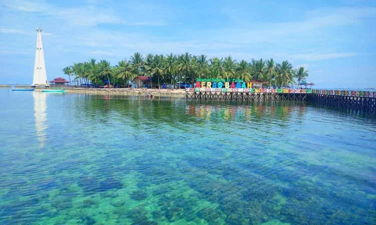
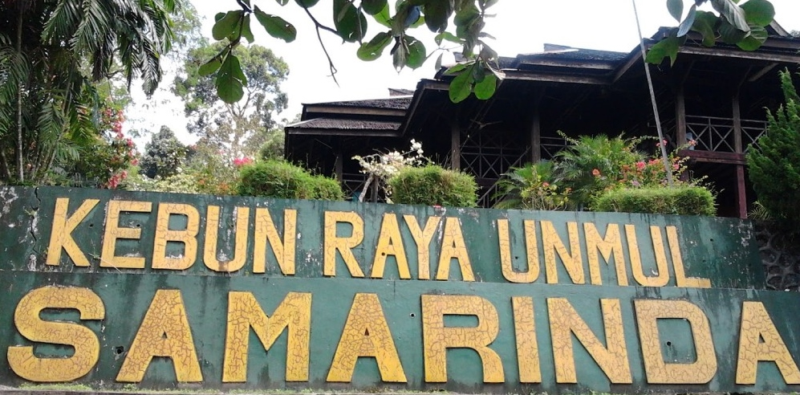
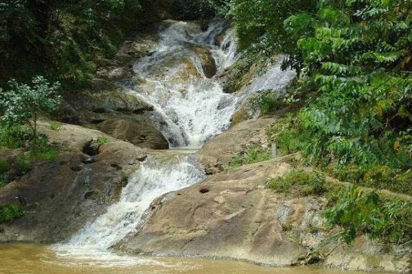

| Nama Tempat | Deskripsi | Gambar |
|---|---|---|
| Pulau Beras Basah | Salah satu tempat wisata Samarinda ini berada di Selat Makasar ini cukup populer, lho di Samarinda. Meskipun membutuhkan waktu yang tidak sebentar untuk sampai kesini, namun semua akan terbayar dengan pemandangan yang didapatkan. Sepanjang perjalanan pun Moms akan disuguhkan hamparan lautan yang biru dan pastinya mampu memanjakan mata. Jembatan kayu yang unik menjadi penyambut saat Moms atau Dads datang ke tempat ini. Bukan itu saja, hamparan laut dengan pasirnya yang putih bersih juga dijamin akan menghilangkan penat selama bekerja. |

|
| Kebun Raya Unmul | Kebun Raya Unmul adalah hutan pendidikan milik Universitas Mulawarman. Meskipun dikelola universitas, namun tempat ini dibuka untuk umum lho. Banyak aktivitas yang bisa dilakukan di kebun ini. Ada sepeda air, danau yang cantik dan bersih, serta kebun binatang mini. Tersedia juga andong yang dapat membawa Moms untuk berkeliling kebun. Berjarak 10 km dari pusat kota Samarinda, Kebun Raya ini bisa dicapai dengan menggunakan kendaraan pribadi ataupun transportasi umum. |

|
| Air Terjun Pinang Seribu | Air terjun yang berada di Samarinda Utara ini berbeda dengan air terjun lainnya lho. Air Terjun Pinang Seribu ini bentuknya berundak sehingga aman untuk dinaiki, aliran airnya pun tidak begitu deras. Jika mengajak keluarga, ada banyak aktivitas yang bisa dilakukan, seperti bermain air, menyewa sepeda air, dan juga memancing. Terdapat juga gazebo atau saung-saung untuk beristirahat sambil menikmati makanan. Jika sedang musim hujan, sebaiknya tidak menaiki air terjun karena aliran airnya bisa cukup deras dan tidak aman. Pastikan wisata Samarinda ini dikunjungi saat sedang ke area ini. |

|